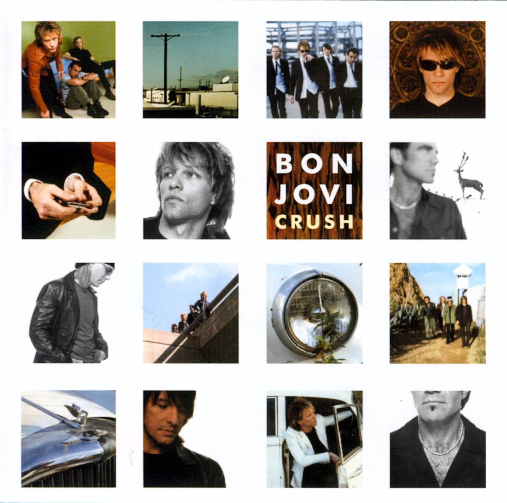
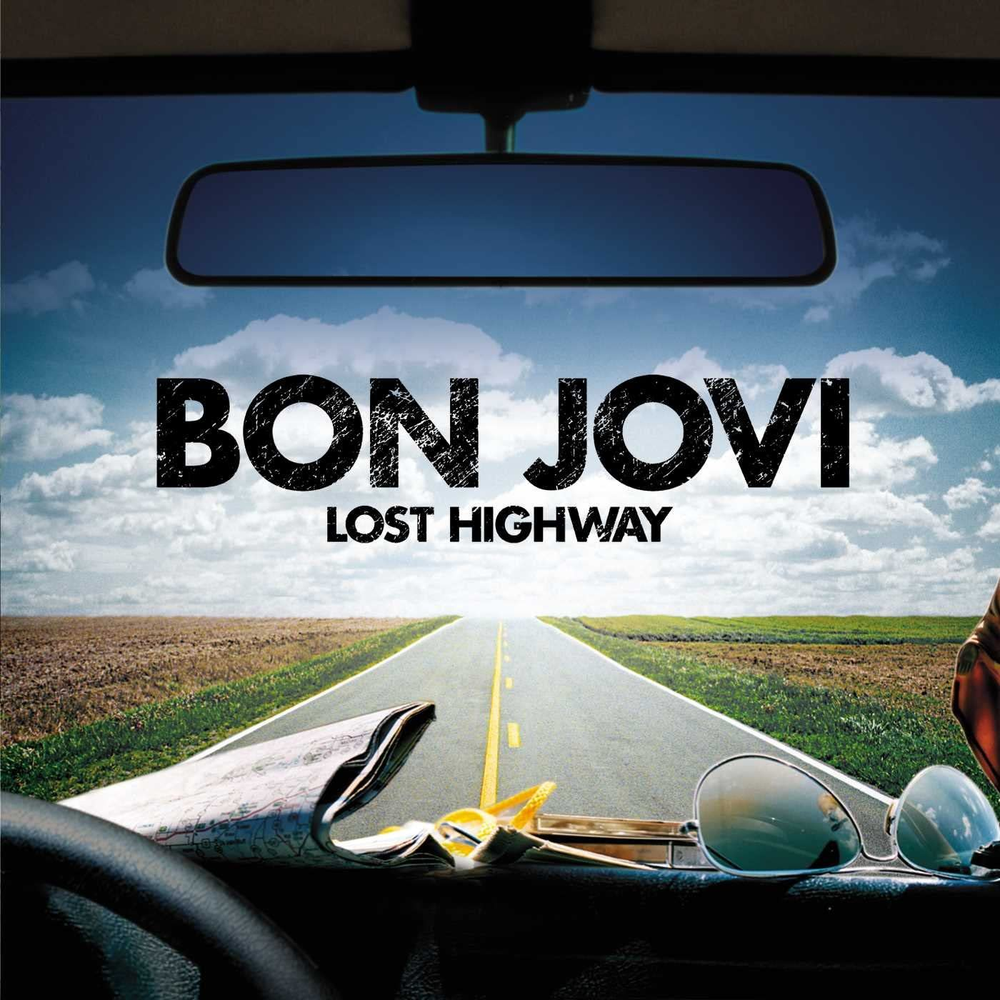

DISCOGRAFÍA

Greatest Hits
- Livin’ On A Prayer
- You Give Love a Bad Name
- It’s My Life
- Have a Nice Day
- Wanted Dead or Alive
- Bad Medicine
- We Weren’t Born to Follow
- I’ll Be There For You
- Born to Be My Baby
- Bed of Roses
- Who Says You Can’t Go Home (versión con Jennifer Nettles)
- Lay Your Hands On Me (radio edit)
- Always
- In These Arms
- What Do You Got? (nueva)
- No Apologies (nueva)

Have a Nice Day
- Have A Nice Day - 3:50
- I Want to Be Loved - 3:50
- Welcome to Wherever You Are - 3:50
- Who Says You Can't Go Home - 4:41
- Last Man Standing - 4:40
- Bells of Freedom - 4:57
- Wildflower - 4:14
- Last Cigarette - 3:40
- I Am - 3:54
- Complicated - 3:40
- Novocaine - 4:50
- Story of My Life - 4:10
- Dirty Little Secret (solo en Japón, Reino Unido, Australia y Asia) / Who Says You Can't Go Home? (versión a dúo con Jennifer Nettles, de Sugarland-solo en Estados Unidos y Canadá)
- Unbreakable (solo en Japón, Reino Unido, Australia y Asia)
- These Open Arms (solo en Japón)
- Nothing (outtake)
- All That l Want (outtake)

Crush
- «It's My Life» (Jon Bon Jovi/Richie Sambora/Max Martin) - 3:47
- «Say It Isn't So» (Jon Bon Jovi/Billy Falcon) - 3:34
- «Thank You For Loving Me» (Jon Bon Jovi/Richie Sambora) - 5:10
- «Two Story Town» (Jon Bon Jovi/Richie Sambora/Dean Grakal/Mark Hudson) - 5:11
- «Next 100 Years» (Jon Bon Jovi/Richie Sambora) - 6:20
- «Just Older» (Jon Bon Jovi/Billy Falcon) - 4:20
- «Mystery Train» (Jon Bon Jovi/Billy Falcon) - 5:15
- «Save The World» (Jon Bon Jovi) - 5:32
- «Captain Crash & The Beauty Queen From Mars» (Jon Bon Jovi/Richie Sambora) - 4:32
- «She's A Mystery» (Jon Bon Jovi/Peter Stuart/Greg Wells) - 5:20
- «I Got The Girl» (Jon Bon Jovi) - 4:37
- «One Wild Night» (Jon Bon Jovi/Richie Sambora/Desmond Child) - 4:21
- «I Could Make a Living Out of Lovin' You» (Jon Bon Jovi/Richie Sambora) - 3:53/4:40 (versión mundial, incluye al principio, una discusión acerca de James Brown, durante 18 segundos, la canción empieza a partir de 48 segundos, quedando únicamente 30 segundos de silencio).
- 14. «Neurotica» (solo en Japón) - 4:33

Lost Highway
- Lost Highway - 4:15
- Summertime - 3:20
- (You Want To) Make A Memory - 4:40
- Whole Lot Of Leavin' - 4:20
- We Got It Going On (con Big & Rich) - 4:14
- Any Other Day - 4:04
- Seat Next To You - 4:24
- Everybody's Broken - 4:14
- Till We Ain´t Strangers Anymore (con LeAnn Rimes) - 4:45
- The Last Night - 3:34
- One Step Closer - 3:40
- I Love This Town - 4:40